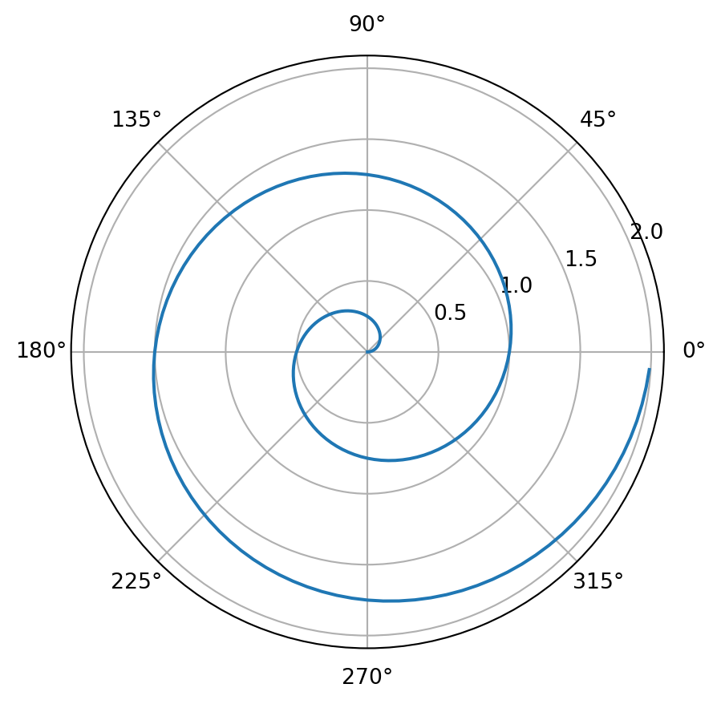

import numpy as np
import matplotlib.pyplot as plt
r = np.arange(0, 2, 0.01)
theta = 2 * np.pi * r
fig, ax = plt.subplots(
subplot_kw = {'projection': 'polar'}
)
ax.plot(theta, r)
ax.set_rticks([0.5, 1, 1.5, 2])
ax.grid(True)
plt.show()
\[ \begin{alignat}{1} \overline{ \boldsymbol{\hat{y}}} &= \bigg(\frac{\partial \mathcal{L}}{\partial\boldsymbol{ \hat{y}}}\bigg)^\top \overline{\mathcal{L}} \\ &=\big(J_{g(\boldsymbol {\hat{y}} ,\boldsymbol {y})\text{ w.r.t }\boldsymbol {\hat{y}}} \big) ^\top \overline{\mathcal{L}} \end{alignat} \]
\[H=\sum_{k=1}^{\infty} \pi_k \cdot\delta(x-\theta_k)\]
\(a^2 + b^2 + c^2\)
\((1 + a) \cdot (1 + a)\)
\(\alpha + \beta\)
\(\frac{1}{2} + \frac{1}{3}\)
$ ( + ) + 1 $
$ \[\begin{pmatrix} 1 & 2 \\ 3 & 4 \end{pmatrix}\]$
\((H_A+x^x)+\sqrt{x}\)
\(\sqrt{\frac{1}{2}}\)
\(f_a(\frac{2}{x})\)
\(\sum_i^{\infty} x_i^2\)
\(\alpha_{\omega}(x)\)
$ \[\begin{matrix} x^2 & a_H \\ \frac{1}{2} & d^2 \end{matrix}\]$
\(\int_0^{\infty} \frac{1}{x}\, dx\)
\(\frac{dx}{df(x)} + \frac{dy}{df(y)}\, =\, 2\)
\(\frac{\partial x}{\partial f(x)} + \frac{\partial y}{\partial f(y)} = 2\)
\(\delta (x) = 2\)
\(\Delta (x) + \Delta (y) = z\)
\(e^{1/2} + 2 = x\)
\(\delta x + \delta x = \delta y\)
\(\Delta x + \Delta z = \Delta y\)
\(C_5H_{12}(l)+8O_2(g)\rightarrow 5CO_2(g)+H_2O(l)\)
\(w_0 + n_0 = 2\)
\(Cr_2O_7^2\)
\(s^{N_2}_+ [n]\)
\(\frac{1}{2\xi \sqrt{1+\xi^2}}\)
\(1\: + 2\)